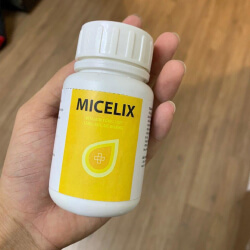
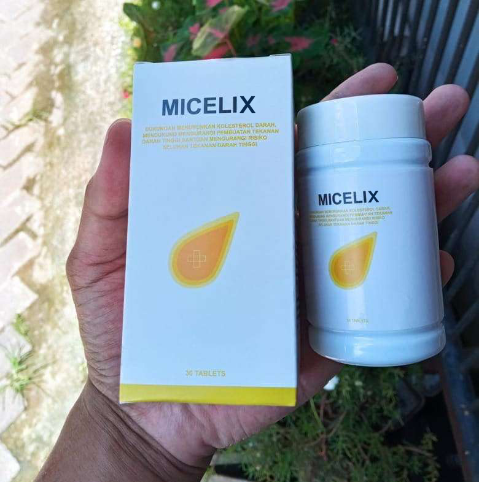
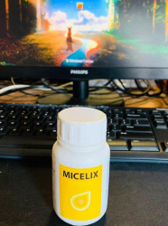

Gina WijayantiAku takkan pernah lagi menonton chanel itu, mereka selalu bohong, membela siapapun yang memberi mereka uang!! Aku kagum pada keberanian dokter ini, tapi sepertinya setelah ini karirnya akan dipersulit.
Deni AgustianKarirnya pasti bakalan naik! Kalau kamu membela kebenaran, kamu pasti akan menang! Dia tidak takut membicarakan apa yang benar-benar membantu, masyarakat pasti akan membelanya! Saya sendiri akan mendengarkan sarannya dan memesan Micelix.
Resti ApriliaSaya menderita hipertensi selama bertahun-tahun, saya bahkan sering pingsan, rekan-rekan saya bahkan sudah terbiasa dengan ini. Ada sedikit perubahan saja dalam cuaca – tekanan darah saya langsung naik; saya merasa sedikit cemas – kelelahan seketika. Saya mengalami takikardia di malam hari. Dokter terus-menerus menakuti saya dengan kemungkinan stroke, karena pembuluh darah saya tidak bisa menahan tekanan darah yang naik-turun seperti itu. Saya sangat takut karena suami saya meninggal akibat strole. Kemudian secara tidak sengaja saya menemukan tentang Micelix: saya menemukannya di sebuah artikel dan memutuskan untuk mencobanya. Sudah beberapa bulan berlalu sejak saya bisa melupakan kelelahan dan lonjakan tekanan darah. Saya merasa segar dan bahkan merasa teremajakan. Saya merekomendasikannya untuk semua orang!

Kania 82Bu Resti, tolong beritahu saya, bagaimana ibu meminumnya? Di mana ibu memesannya?
Resti ApriliaSaya memesannya di sini. Produk ini sangat mudah diminum, hanya di pagi dan malam hari.
Tedi KurniawanBisakah Anda memberitahu apakah Anda mengalami alergi? Saya memiliki intoleransi terhadap hampir semua obat-obatan, dan tekanan darah saya sudah menjadi masalah sejak lama...
Resti ApriliaMas Tedi, komposisinya sepenuhnya alami, sebagian besar ekstrak herbal. Jika mas Tedi bisa meminum obat alami tanpa alergi, maka ini adalah pilihan yang bagus!
Indah PermatasariSaya seorang dokter dan saya bisa bilang kalau hipertensi bisa membuat seseorang menjadi cacat dalam waktu singkat. Karena itu, lebih baik untuk menjaga tekanan darah yang normal selagi masih bisa. Micelix bukan hanya obat yang membantu untuk menstabilkan tekanan darah, tapi juga produk yang bagus untuk pencegahan. Sayangnya, statistik saat ini menunjukkan bahwa serangan jantung dan stroke adalah penyebab lebih dari 70% kematian orang-orang di bawah usia 60 tahun. Orang-orang meninggal sebelum mereka bisa pensiun! Saya mendorong semua orang untuk menjaga kesehatan mereka dan mengobati gejala-gejala mereka sebelum mengalami pembuluh darah pecah atau tersumbat. Micelix harganya murah dan cukup efektif untuk disimpan di setiap kotak P3K!
Sinta FitrianiBu Indah, kamu benar! Ayah saya tiba-tiba mengalami stroke, dia meninggal di tempat kerjanya. Ini mengejutkan keluarga kami… Sekarang kami selalu memiliki monitor tekanan darah di rumah, dan saya selalu menyuruh suami dan ibu saya memeriksa tekanan darah mereka secara rutin. Saya sudah memesan Micelix, pencegahan tentunya langkah yang lebih baik!
Rendi PrayudhaSaya juga memesan produk ini setelah membaca ini dan menerima paketnya saat penawaran spesial! Saya kaget dengan betapa cepatnya mereka mengirimkannya ke kota kami.
Linda HeryantiIndah, sebagai dokter, tolong beritahu saya, mengapa Micelix lebih baik dibandingkan obat-obatan biasanya yang diresepkan di setiap klinik?
Dr. HendroLinda, tidak seperti obat-obatan buatan farmasi, Micelix tidak hanya menormalkan tekanan darah tinggi, produk ini menghilangkan penyebab hipertensi. Anda cukup menjalani pengobatan menggunakan produk ini tiap 2-3 tahun. Salam hangat, Dr. Hendro.
Indah PermatasariIni karena komponen alami yang tidak mengganggu liver dan kerongkongan tapi tetap efektif memperkuat dinding pembuluh darah dan merangsang kekuatan sistem kekebalan tubuh, mengaktifkan penyembuhan sendiri. Ini adalah pendekatan yang inovatif, dan tidak semua perusahaan farmasi telah menguasainya, karena ini adalah teknologi yang mahal. Micelix memiliki formula yang sempurna.
Intan2302Ada penawaran spesial di sini, kalian bisa mendapatkannya dengan diskon 50%!
Pandji 1214Baru-baru ini seorang profesor memberitahu kami saat kuliah di fakultas kedokteran. Sepertinya mereka telah menemukan kombinasi zat-zat alami yang saling meningkatkan efek satu sama lain dan memperkuat dinding pembuluh darah. Menarik sekali untuk mempelajarinya
Rindu AristiaApa saja bahan bakunya?
Pandji 1214Yang saya tahu pasti adalah Pegagan, mangga, dan Acai – bahan-bahan ini mengandung vitamin dalam jumlah besar dan memperkuat dinding pembuluh darah + herbal yang memicu kekebalan tubuh, dan banyak sekali yang lainnya, saya tidak ingat semuanya. Singkatnya: beberapa komponen memperkuat pembuluh darah, lainnya mengurangi kadar kolesterol dan membakar plak kolesterol yang terbentuk, sementara lainnya memicu sistem kekebalan tubuh.
Rindu AristiaMakasih! Saya menemukan keterangannya di situs webnya; produk ini benar-benar mengandung banyak bahan baku alami
Yuni FitrianiObat alami selalu yang terbaik! Seluruh kerongkongan saya terbakar karena pil. Satu masalah diatasi malah muncul yang lain. Untungnya, sekarang dunia pengobatan resmi mulai bergerak ke obat-obatan herbal
Dr. HendroYuni, sayang sekali ini terjadi. Saya ingin memberitahu Anda bahwa Anda bisa meminum Micelix tanpa ragu-ragu. Produk ini tidak memiliki efek samping, formulanya sudah diakui dan bahan-bahan kandungannya aman untuk Anda. Jaga kesehatan. Salam hangat, Dr. H. Winarto.
BaskoroAda yang sudah pernah mencobanya? Bagaimana menurut kalian review yang sebenarnya? Saya sering mengalami pusing, dan saya tak punya waktu untuk berobat ke dokter
Anya PuspitaSaya minum Micelix tiap pagi! Saya menemukannya sebulan lalu. Saya benar-benar merasa lebih sehat sekarang; sebelum itu saya selalu takut pingsan saat di kendaraan umum, karena tekanan darah saya jatuh :(
Yulianti RahmansyahSaya sudah memesannya untuk saya sendiri, saya mengambilnya di kantor pos kemarin. Saya meminumnya di malam hari dan langsung merasa jauh lebih sehat, tinitus menghilang. Saya akan terus meminumnya
Reza FirmansyahIni kedua kalinya saya memesan Micelix untuk saya sendiri dan orang tua saya. Produk yang sangat bagus! Tadinya saya menderita migren dan semuanya jadi gelap, saya bahkan sering pingsan. Micelix membantu saya menghilangkannya, saya merekomendasikannya!

Kinanti SupriyantiBanyak sekali review positif, terima kasih semuanya! Saya pasti akan memesannya untuk orang tua saya!
Pandu PramujaMicelix menstabilkan tekanan darah dengan sangat baik dan meningkatkan kesehatan secara keseluruhan. Saya selalu menyimpannya di meja saya, saya tak bisa pergi tanpa produk ini

Vina GeraldineSaya mengetahui tentang Micelix sudah lama sekali, produk ini memiliki banyak review positif. Kata mereka obat ini penting untuk pemulihan setelah stroke. Saya memesannya untuk orang tua saya, pencegahan memang lebih baik!
Ridho FKasih tahu dong di mana saya bisa memesannya, supaya saya tidak dapat yang palsu?
Anita SeptianiBanyak banget yang palsu!!! Kamu harus membelinya hanya di sini saja! Kamu lihat hologram di formulir pemesanannya? Ini artinya jaminan 100% produk Micelix asli.
Dondi HartonoNenek saya mempunyainya, dulu saya pernah meminumnya saat saya mabuk – ternyata bisa membantu! :))
Dr. HendroDondi, Micelix Menormalkan tekanan darah arteri dan meredakan vasospasme, produk ini dapat digunakan untuk meredakan gejala-gejala hangover. Namun, sebagai dokter, saya tidak menyarankan Anda untuk sering-sering minum alkohol. Salam hangat, Dr. H. Winarto.
Shania777Saya memesannya untuk ibu saya, kurirnya menelepon, katanya paketnya akan sampai besok. Saya akan menuliskan kesan saya nanti
AryantiAku benar-benar berharap Micelix bisa membantu! Tekanan darah saya tinggi sekali, sudah dua minggu saya hanya bisa terbaring di tempat tidur saja :(
Dr. HendroAryanti, mohon beritahu kami nanti tentang efek terapinya. Salam hangat, Dr. H. Winarto.
Cinta PandjaitanOrang tua saya pergi ke sebuah resort, mereka diberi Micelix untuk pencegahan. Ibu saya senang sekali sekarang produk ini dijual bebas. Katanya dia merasa lebih sehat dengan produk ini!
GanjarDokter yang lucu, seperti Dr. House! Saya harus ingat namanya, saya akan membawanya ke desa musim liburan nanti, manula di sana selalu menderita masalah ini
Nabila FebriantiSaya sudah baca keterangan Micelix. Saya kaget ternyata berry acai memiliki khasiat ini! Tapi sebagai seorang apoteker saya bisa bilang ini: iya, dengan kombinasi ini, bahan ini benar-benar bisa memicu sistem kekebalan tubuh secara aktif. Saya sudah pesan satu paket; saya akan mempelajarinya
Andita PramithaSaya minum Micelix menggantikan vitamin. Produk ini meningkatkan kesehatan saya dan membuat kepala saya bekerja lebih baik :)
Rusman3Di situsnya ada diskon besar untuk pembelian Micelix, apakah benar?
Chandra PurnamaKalau obat ini benar-benar sebagus yang orang-orang bilang, obat ini benar-benar penyelamat. Saya menderita hipertensi selama bertahun-tahun, dan saya alergi pada hampir semua obat-obatan.
Erina NoviantiSaya memesannya untuk ibu saya. 2 tahun lalu, kami kehilangan ayah saya karena stroke, saya tidak ingin kehilangan ibu saya. Masalah vaskular mengambil nyawa penderitanya terlalu cepat…
Mira SuryaningsihSaya selalu menyimpan Micelix di kotak P3K saya. Pencegahan lebih baik daripada harus diangkut ambulans!
Komentar